Winter 2014
An iOS app that allows people to print documents to any printer on the U of M campus, using the MPrint network. You can print documents from:
| 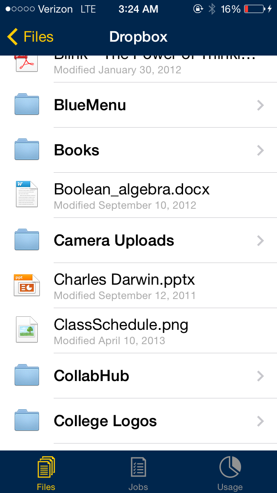 | 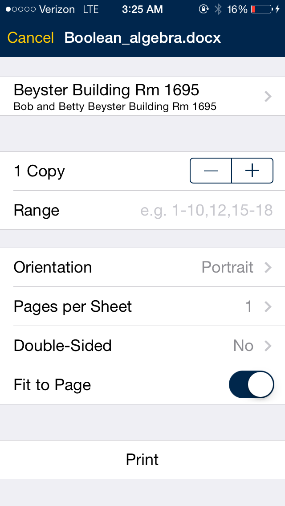 | 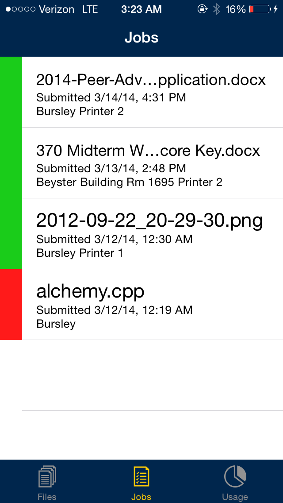 | 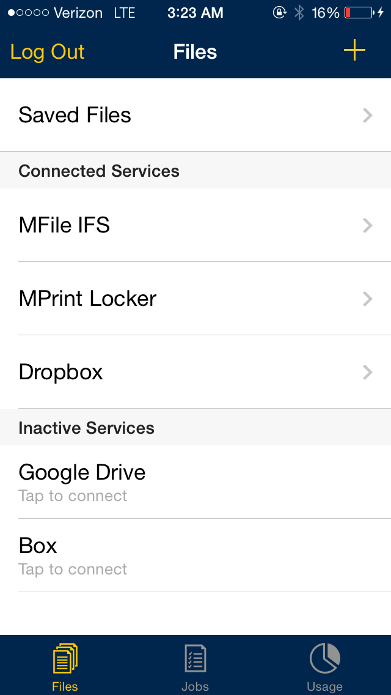 |
Fall 2013
An iOS app that provides quick access to menus and nutrition information for the dining halls at the University of Michigan.
Screenshots| 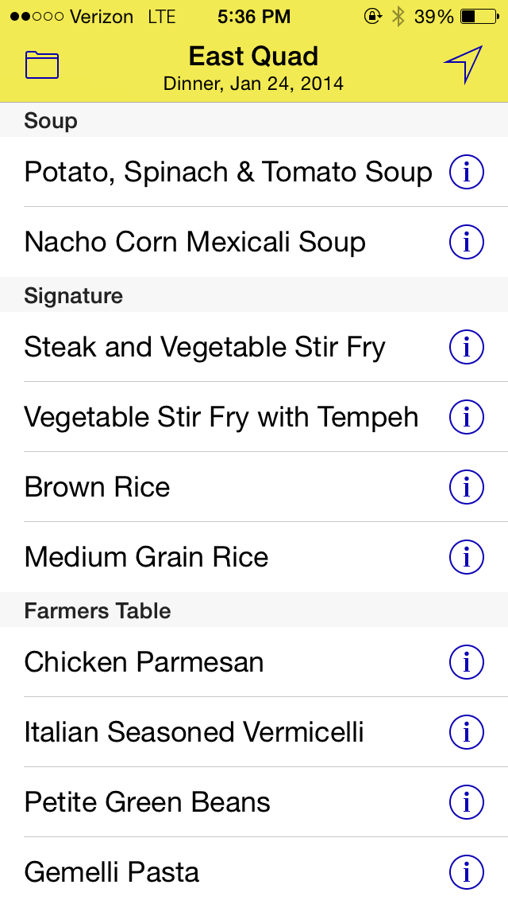 | 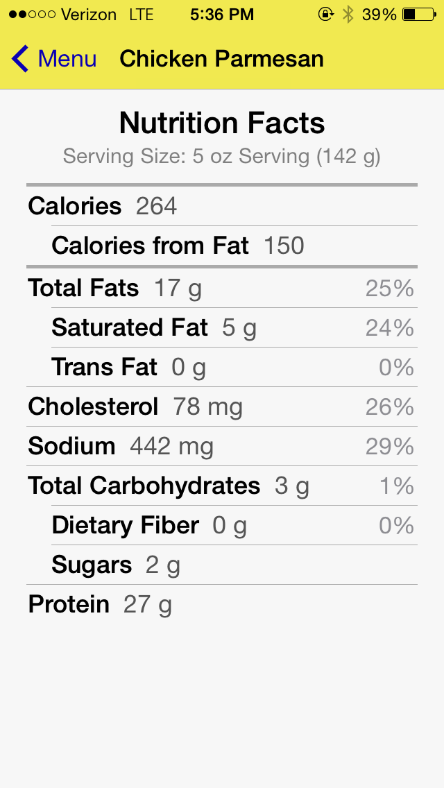 | 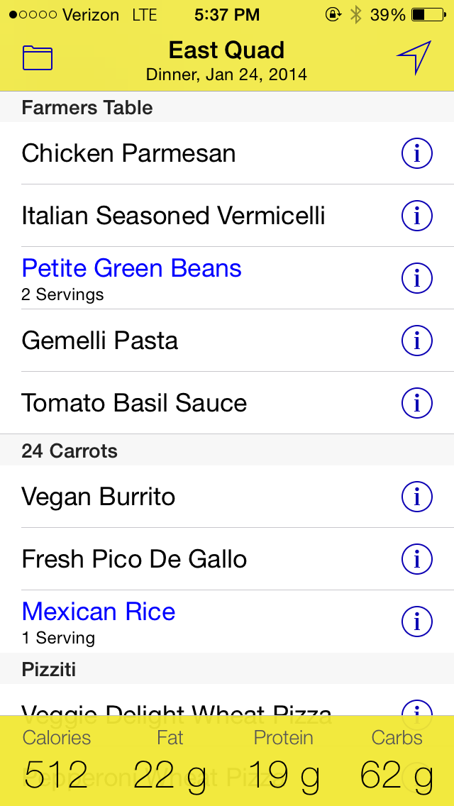 |
Fall 2012
An iOS version of the card game "13" that allows two people to play over Bluetooth.
Built for the U of M 48-Hour Mobile Apps Hackathon.
| 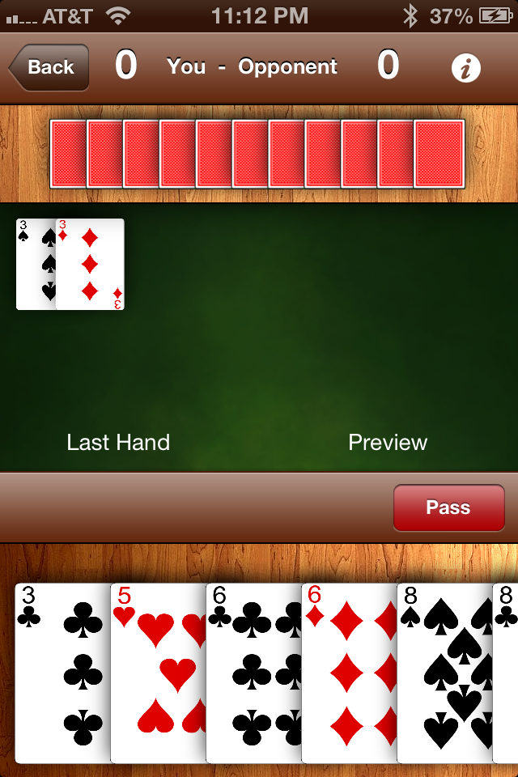 | 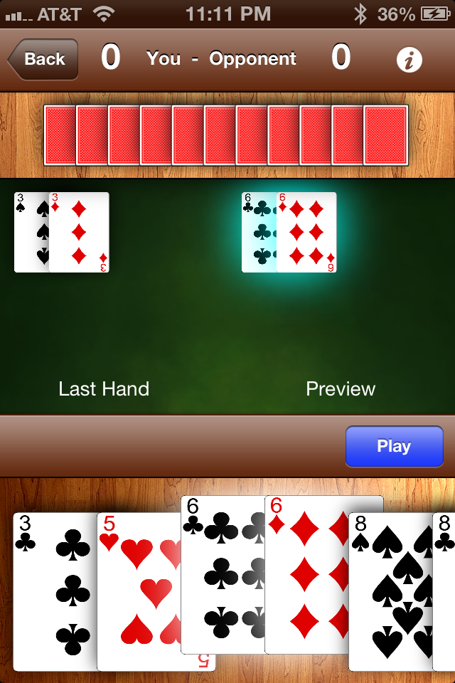 |
Summer 2011
A brickbreaker Hawaiian-themed brickbreaking game targeted for Android tablets, but built on the cross-platform Unity 3D engine.
Built for the U of M SCEEP Program (Summer College of Engineering Exposure Program).
| 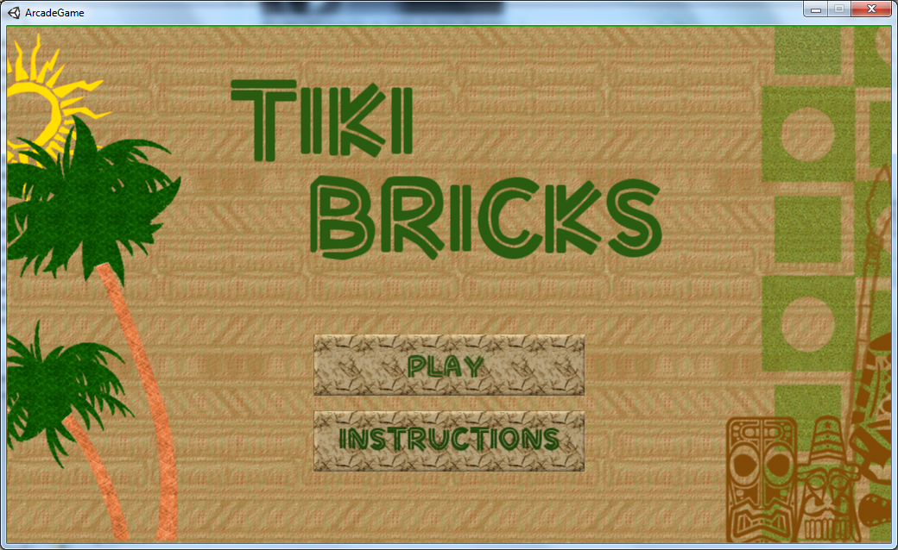 | 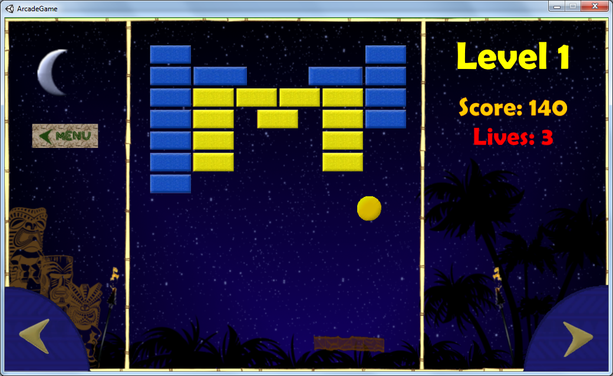 |
| 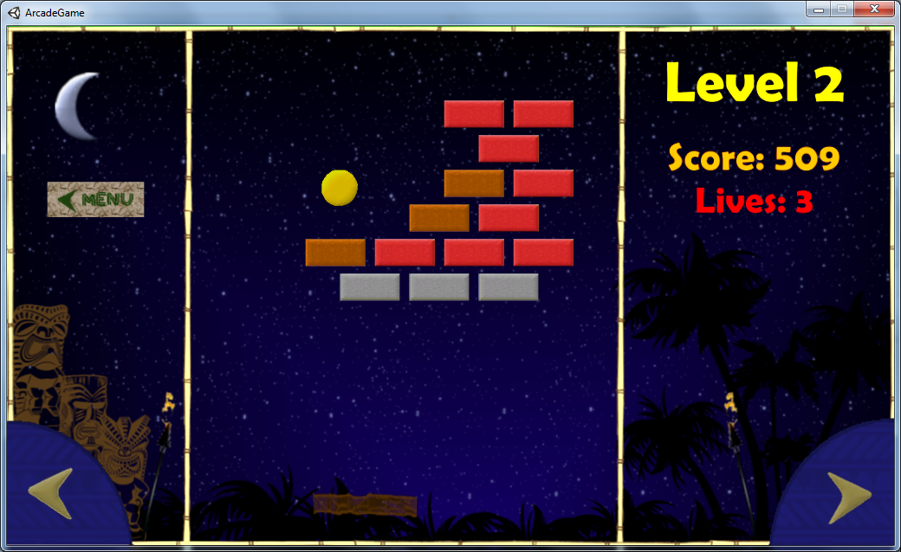 | 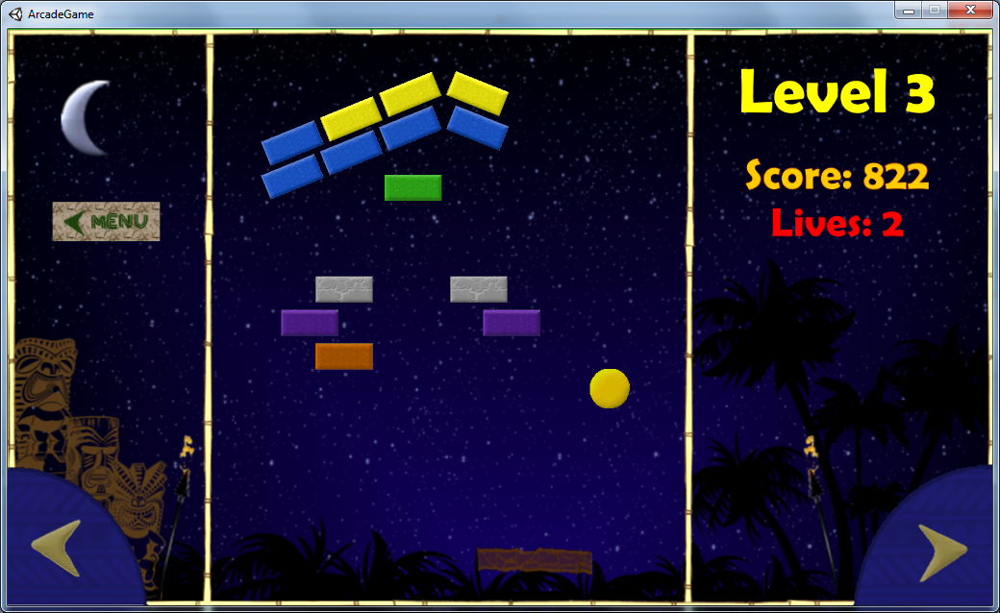 |
Spring 2011
One of my high school teachers commissioned me to write this software to assist in running a biochemistry lab. Students run tests on samples of bacteria, determine specific traits of the species, then enter their findings into the program, which searches in a database of known species for possible matches. The program then generates printable result sheets which can then be submitted.
Screenshots| 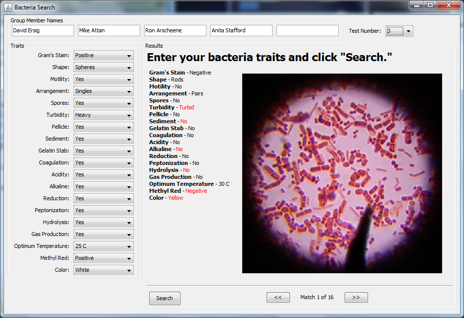 |